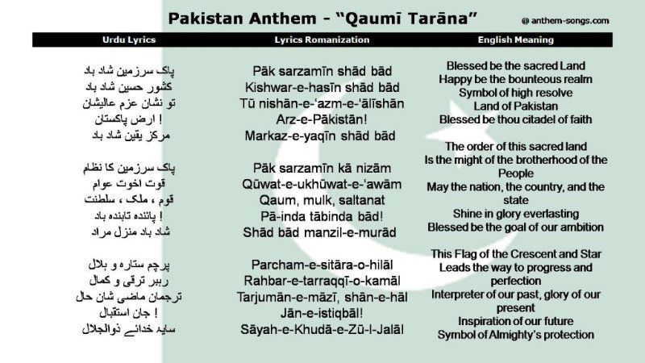

National Symbols
Flag
- Pakistan flag consists of dark green with a white vertical stripe, a white crescent and a five-pronged star in the middle.
- The green colour represents Islam and the majority of Muslims in Pakistan; the white stripe represents religious minorities living side by side with Muslims.
- The crescent and star stand for progress and enlightenment respectively. The flag was adopted by the Constituent Assembly of Pakistan on 11 August 1947.
- It was designed by Mr. Amiruddin Kidwai.
National Anthem
- The national anthem of Pakistan, known as the Qaumi Tarana, was officially adopted in 1954, with the lyrics written by Hafeez Jullundhri and the music composed by Ahmed G. Chagla.
- It's three stanzas evoke themes of faith, freedom, and the strength of Pakistan.
- The anthem serves as a symbol of national identity and pride, fostering a sense of unity among the Pakistani people.

Listen to Pakistan's National Anthem here on YouTube!